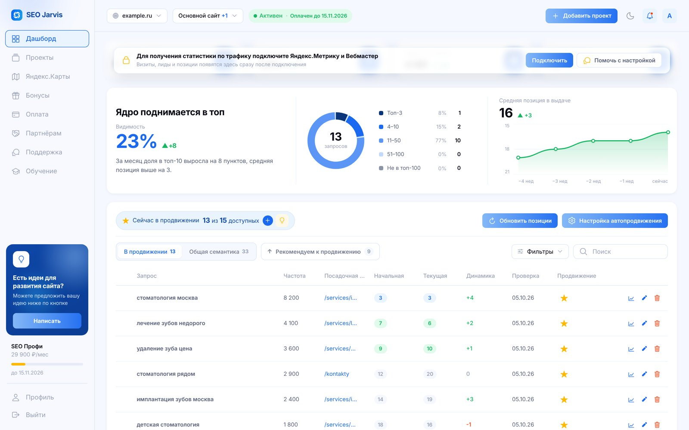
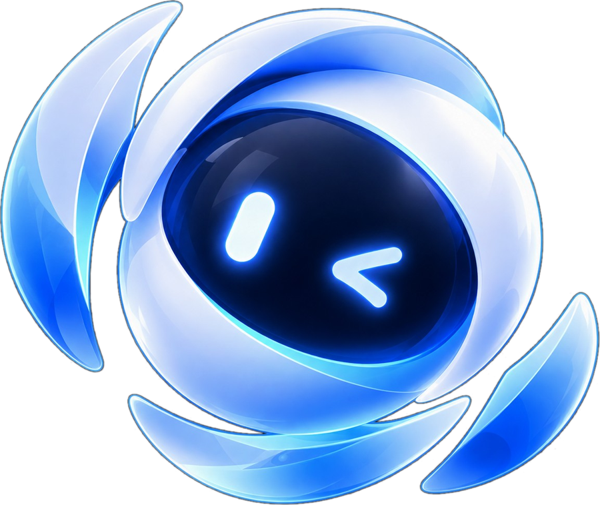
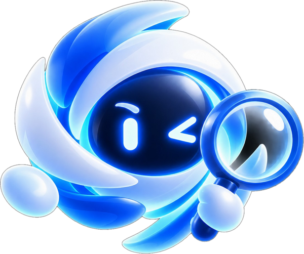
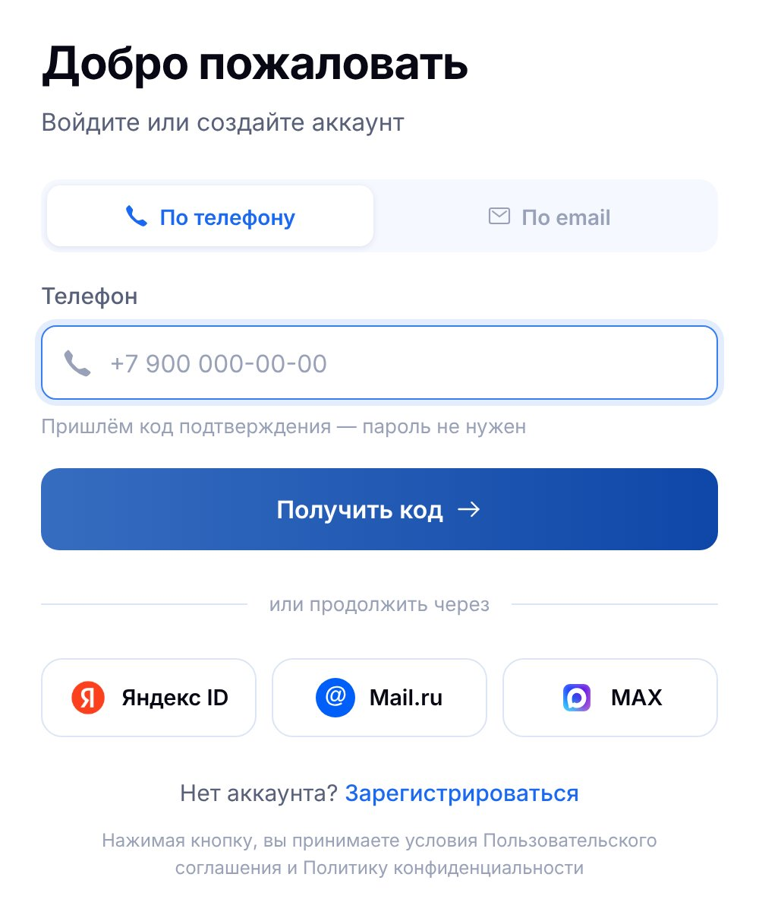

Всё для
продвижения —
в одном кабинете
продвижения —
в одном кабинете



Ролик 1 мин 52 с с голосом. Открываемся фразой «Всё для продвижения — в одном кабинете», знакомим с маскотом Jarvis, показываем регистрацию в 1 клик и анализ сайта, а потом маскот по очереди открывает 10 модулей кабинета. Шрифт и цвета — с сайта seojarvis.ru, кабинет — в светлой теме на тёмной сцене.
Убрали «Отчёт раз в месяц?». Ролик открывается фразой «Всё для продвижения — в одном кабинете», дальше путь клиента и модули.
«Никаких отчётов раз в месяц…» пока нигде не используем — по вашему решению. Можно вернуть позже одной строкой.
Показываем все способы из кабинета: телефон, почта и кнопки Яндекс ID и MAX. Нажимаем Яндекс ID — аккаунт готов.
Сцены «Пара вопросов» больше нет: сразу после входа — адрес сайта и регион.
Над шкалой загрузки крупно «Jarvis собирает и готовит данные». Шаги — большим списком, каждый загорается и получает галочку. Маскот проверяет их через лупу.
Маскот — ведущий: появляется из логотипа, жмёт кнопки, смотрит в лупу, радуется запуску, открывает модули и машет в финале. Ниже — промпты для Google Veo.
Теперь это главный экран кабинета: «Ядро поднимается в топ», видимость 23%, 13 запросов, средняя позиция 16. Светлая тема.
Пункт нажимается → разворачивается в окно раздела → сворачивается обратно с галочкой → нажимается следующий.
Маскот не «наклейка сбоку»: в каждом появлении он что-то делает в сюжете. Картинки вырезал из чёрного фона сам; если есть исходники PNG с прозрачным фоном — края будут чище.

mascot-wink.png · знакомство, финал, центр меню
mascot-magnifier.png · анализ сайта| Сцена | Что делает маскот | Видео Veo | Если без видео |
|---|---|---|---|
| 03 · 0:07 | Лепестки логотипа раскрываются — внутри маскот. Открывает глаза и подмигивает | A | Логотип плавно перетекает в картинку, маскот подпрыгивает |
| 04 · 0:11 | Отлетает к окну входа и сам нажимает «Яндекс ID» | D | Подлетает к кнопке, кнопка нажимается курсором |
| 06 · 0:24 | С лупой проверяет шаги анализа, едет вниз по списку | B | Картинка с лупой едет вдоль списка, на каждом шаге лёгкий кивок |
| 07 · 0:33 | Выпрыгивает в окне «Поздравляем!» вместо старого робота и радуется | C | Подпрыгивает и чуть кружится |
| 08–18 · 0:37 | Стоит в центре меню и по очереди «нажимает» на 10 модулей | E (петля) | Парит, поворачивается к нужному пункту |
| 20 · 1:45 | Машет и подмигивает рядом с кнопкой «5 дней бесплатно» | F | Подлетает к кнопке, лёгкое покачивание |
Как делать: в Veo загрузить картинку маскота как первый кадр (image-to-video), формат 16:9, 1080p, 8 с. Каждый промпт прогнать 2–3 раза и выбрать лучший дубль. Фон — чистый чёрный, как на исходных картинках: я вырежу его и поставлю маскота на сцену. Из 8 секунд в ролик пойдёт 2–4 лучших.



Около 180 слов, спокойный уверенный темп. «Джарвис» — по-русски, чтобы голос не прочитал имя по-английски. Числа написаны словами.
Беру со слов начальника, но в кабинете их нет. В фактах бренда записано «120+ проверок скорости, индексации и разметки», а экран GEO в кабинете показывает Алису, ChatGPT, Perplexity, Gemini, GigaChat и DeepSeek. Нужно подтвердить обе цифры.
Начальник: «Всё для продвижения в одном кабинете». На сайте: «Всё для роста — в одном кабинете». Ставлю вариант начальника.
На странице бонусов логотипы Яндекса, VK, Telegram, Bitrix24, amoCRM. Показываю страницу общим планом, крупно — только сами бонусы («−30% на первый месяц…»). Если логотипы можно показывать крупно — скажите.
В окне входа есть третья кнопка — Mail.ru. Она видна в кадре, но голос называет только Яндекс ID и MAX, как просил начальник.
Трек из второго видео нужно лицензировать, либо берём другой трек с лицензией для рекламы.
Пока считаю без видео: маскот двигается целиком (парит, подпрыгивает, поворачивается). Если дубли из Veo получатся хорошими — заменю ими эти места.